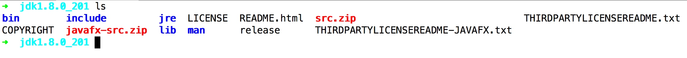

<!doctype html>
<html class="no-js" lang="en">
  <head>
    <meta charset="utf-8" />
    <meta name="viewport" content="width=device-width, initial-scale=1.0" />
    <title>
    
  java ci/cd环境搭建 - 小林的博客
  
  </title>
  
  
  <link href="atom.xml" rel="alternate" title="小林的博客" type="application/atom+xml">
    <link rel="stylesheet" href="asset/css/foundation.min.css" />
    <link rel="stylesheet" href="asset/css/docs.css" />
    <script src="asset/js/vendor/modernizr.js"></script>
    <script src="asset/js/vendor/jquery.js"></script>
  <script src="asset/highlightjs/highlight.pack.js"></script>
  <link href="asset/highlightjs/styles/github.css" media="screen, projection" rel="stylesheet" type="text/css">
  <script>hljs.initHighlightingOnLoad();</script>
<script type="text/javascript">
  function before_search(){
    var searchVal = 'site:neatlife.github.io ' + document.getElementById('search_input').value;
    document.getElementById('search_q').value = searchVal;
    return true;
  }
</script>
  </head>
  <body class="antialiased hide-extras">
    
    <div class="marketing off-canvas-wrap" data-offcanvas>
      <div class="inner-wrap">


<nav class="top-bar docs-bar hide-for-small" data-topbar>


  <section class="top-bar-section">
  <div class="row">
      <div style="position: relative;width:100%;"><div style="position: absolute; width:100%;">
        <ul id="main-menu" class="left">
        
        <li id=""><a target="_self" href="index.html">Home</a></li>
        
        <li id=""><a target="_self" href="archives.html">Archives</a></li>
        
        </ul>

        <ul class="right" id="search-wrap">
          <li>
<form target="_blank" onsubmit="return before_search();" action="https://google.com/search" method="get">
    <input type="hidden" id="search_q" name="q" value="" />
    <input tabindex="1" type="search" id="search_input"  placeholder="Search"/>
</form>
</li>
          </ul>
      </div></div>
  </div>
  </section>

</nav>

        <nav class="tab-bar show-for-small">
  <a href="javascript:void(0)" class="left-off-canvas-toggle menu-icon">
    <span> &nbsp; 小林的博客</span>
  </a>
</nav>

<aside class="left-off-canvas-menu">
      <ul class="off-canvas-list">
        
        <li><a target="_self" href="index.html">Home</a></li>
        
        <li><a target="_self" href="archives.html">Archives</a></li>
        

    <li><label>Categories</label></li>

        
            <li><a href="monitor.html">监控</a></li>
        
            <li><a href="vim.html">VIM</a></li>
        
            <li><a href="java.html">JAVA</a></li>
         

      </ul>
    </aside>

<a class="exit-off-canvas" href="#"></a>


        <section id="main-content" role="main" class="scroll-container">
        
       

 <script type="text/javascript">
  $(function(){
    $('#menu_item_index').addClass('is_active');
  });
</script>
<div class="row">
  <div class="large-8 medium-8 columns">
      <div class="markdown-body article-wrap">
       <div class="article">
          
          <h1>java ci/cd环境搭建</h1>
     
        <div class="read-more clearfix">
          <span class="date">2019/4/11</span>

          <span>posted in&nbsp;</span> 
          
              <span class="posted-in"><a href='java.html'>JAVA</a></span>
           
         
          <span class="comments">
            

            
          </span>

        </div>
      </div><!-- article -->

      <div class="article-content">
      <p>最近搭建了一套java的ci/cd环境，记录下搭建过程😄</p>

<p>注：下面演示软件安装在/opt</p>

<h5 id="toc_0">准备一台机器，内存8G以上 系统版本centos 7</h5>

<p></p>

<span id="more"></span><!-- more -->

<h5 id="toc_1">安装java</h5>

<p>从oracle官网下载并解压<br/>
</p>

<p>设置环境变量<br/>
vim /etc/profile</p>

<pre><code class="language-shell">export JAVA_HOME=/opt/jdk1.8.0_201

export PATH=$JAVA_HOME/bin:/opt/rancher:/opt:/opt/apache-maven-3.6.0/bin:/opt/gitlab-runner:$PATH
</code></pre>

<h5 id="toc_2">安装jenkins</h5>

<p>wget <a href="http://mirrors.jenkins.io/war-stable/latest/jenkins.war">http://mirrors.jenkins.io/war-stable/latest/jenkins.war</a></p>

<p>制作jenkins启动脚本<br/>
start_jenkins.sh</p>

<pre><code class="language-shell">#!/bin/bash

export JAVA_HOME=/opt/jdk1.8.0_201
export JRE_HOME=$JAVA_HOME/jre
export PATH=$JAVA_HOME/bin:$PATH
export CLASSPATH=.:$JAVA_HOME/lib/*.jar:$JRE_HOME/lib:$CLASSPATH
export JENKINS_SERVER_PATH=/opt/jenkins_server

cd ${JENKINS_SERVER_PATH}
# nohup java -jar jenkins.war --httpPort=8080 &gt;/dev/null 2&gt;&amp;1 &amp;
nohup java -jar jenkins.war --httpPort=8080 &gt; jenkins.log &amp;
</code></pre>

<p>设置开机启动<br/>
vim /etc/rc.local</p>

<pre><code class="language-shell">/opt/jenkins_server/start_jenkins.sh
</code></pre>

<p>添加开发机</p>

<p></p>

<h5 id="toc_3">安装jenkins插件</h5>

<p>在jenkins插件中心安装以下插件: <a href="http://127.0.0.1:8080/pluginManager/available">http://127.0.0.1:8080/pluginManager/available</a></p>

<table>
<thead>
<tr>
<th>名称</th>
<th>作用</th>
</tr>
</thead>

<tbody>
<tr>
<td>Publish Over SSH</td>
<td>将文件发到目标服务器</td>
</tr>
<tr>
<td>SonarQube Scanner for Jenkins</td>
<td>代码质量分析</td>
</tr>
<tr>
<td>Maven Integration plugin</td>
<td>maven打包</td>
</tr>
<tr>
<td>JaCoCo plugin</td>
<td>自动测试并上报sonarqube</td>
</tr>
<tr>
<td>gitlab</td>
<td>连接gitlab代码库</td>
</tr>
</tbody>
</table>

<h5 id="toc_4">安装docker</h5>

<pre><code class="language-shell">yum install -y docker
systemctl enable docker
systemctl start docker
</code></pre>

<h5 id="toc_5">安装gitlab</h5>

<p>下载laradock工具包</p>

<pre><code class="language-shell">git clone https://github.com/laradock/laradock.git &amp;&amp; cp env-example .env
</code></pre>

<p>启动gitlab</p>

<pre><code class="language-shell">cd laradock &amp;&amp; docker-compose up -d gitlab
</code></pre>

<p>访问ip:8989查看效果<br/>
</p>

<h5 id="toc_6">安装yearning</h5>

<p>下载yearning docker工具包</p>

<pre><code class="language-shell">git clone https://github.com/cookieY/Yearning.git
cd Yearning/install/yearning-docker-compose
docker-compose up -d
</code></pre>

<p>使用 默认账号：admin，默认密码：Yearning_admin 登陆查看效果</p>

<p></p>

<h5 id="toc_7">安装sonarqube</h5>

<p>下载sonarqube docker工具包</p>

<pre><code class="language-shell">git clone https://github.com/thyrlian/SonarOnDocker.git
</code></pre>

<p>启动sonarqube</p>

<pre><code class="language-shell">docker-compose -f docker-compose-mysql.yml up -d
</code></pre>

<p>访问9000端口，查看效果</p>

<p></p>

<h5 id="toc_8">安装maven &amp;&amp; graddle</h5>

<p>从<a href="https://maven.apache.org/download.cgi%E4%B8%8B%E8%BD%BDmaven%E5%B9%B6%E8%A7%A3%E5%8E%8B">https://maven.apache.org/download.cgi下载maven并解压</a><br/>
从<a href="https://gradle.org/releases/%E4%B8%8B%E8%BD%BDgradle%E5%B9%B6%E8%A7%A3%E5%8E%8B">https://gradle.org/releases/下载gradle并解压</a><br/>
设置环境变量: vim /etc/profile</p>

<pre><code class="language-shell">export JAVA_HOME=/opt/jdk1.8.0_201

export PATH=$JAVA_HOME/bin:/opt/rancher:/opt:/opt/apache-maven-3.6.0/bin:/opt/gradle-5.3.1/bin:/opt/gitlab-runner:$PATH
</code></pre>

<p>验证安装<br/>
</p>

<h5 id="toc_9">安装kubectl &amp;&amp; rancher cli</h5>

<pre><code class="language-shell">curl -LO https://storage.googleapis.com/kubernetes-release/release/$(curl -s https://storage.googleapis.com/kubernetes-release/release/stable.txt)/bin/darwin/amd64/kubectl

chmod +x kubectl

mv kubectl /opt/
</code></pre>

<p>从<a href="https://github.com/rancher/cli/releases%E4%B8%8B%E8%BD%BDrancher">https://github.com/rancher/cli/releases下载rancher</a> cli并解压<br/>
把rancher和kubectl加入环境变量</p>

<p>在rancher上创建api token并取得token内容<br/>
</p>

<p>rancher cli配置token认证</p>

<pre><code class="language-shell">rancher login https://rancherip:8843 -t rancher的token
</code></pre>

<h5 id="toc_10">最终目录结构</h5>

<p></p>

<p></p>

<p>待后续更新...</p>


    

      </div>

      <div class="row">
        <div class="large-6 columns">
        <p class="text-left" style="padding:15px 0px;">
      
        </p>
        </div>
        <div class="large-6 columns">
      <p class="text-right" style="padding:15px 0px;">
      
          <a  href="15548919605486.html" 
          title="Next Post: pinpoint-docker开启邮件报警和集成钉钉报警推送">pinpoint-docker开启邮件报警和集成钉钉报警推送 &raquo;</a>
      
      </p>
        </div>
      </div>
      <div class="comments-wrap">
        <div class="share-comments">
          

          

          
        </div>
      </div>
    </div><!-- article-wrap -->
  </div><!-- large 8 -->


 <div class="large-4 medium-4 columns">
  <div class="hide-for-small">
    <div id="sidebar" class="sidebar">
          <div id="site-info" class="site-info">
            
                <h1>小林的博客</h1>
                <div class="site-des">技术干货分享博客</div>
                <div class="social">


<a target="_blank" class="github" target="_blank" href="https://github.com/neatlife" title="GitHub">GitHub</a>

  <a target="_blank" class="rss" href="atom.xml" title="RSS">RSS</a>
                
              	 </div>
          	</div>

             

              <div id="site-categories" class="side-item ">
                <div class="side-header">
                  <h2>Categories</h2>
                </div>
                <div class="side-content">

      	<p class="cat-list">
        
            <a href="monitor.html"><strong>监控</strong></a>
        
            <a href="vim.html"><strong>VIM</strong></a>
        
            <a href="java.html"><strong>JAVA</strong></a>
         
        </p>


                </div>
              </div>

              <div id="site-categories" class="side-item">
                <div class="side-header">
                  <h2>Recent Posts</h2>
                </div>
                <div class="side-content">
                <ul class="posts-list">
	      
		      
			      <li class="post">
			        <a href="15549548897698.html">java ci/cd环境搭建</a>
			      </li>
		     
		  
		      
			      <li class="post">
			        <a href="15548919605486.html">pinpoint-docker开启邮件报警和集成钉钉报警推送</a>
			      </li>
		     
		  
		      
			      <li class="post">
			        <a href="15549046122903.html">Vim寄存器：从入门到精通</a>
			      </li>
		     
		   
		  		</ul>
                </div>
              </div>
        </div><!-- sidebar -->
      </div><!-- hide for small -->
</div><!-- large 4 -->

</div><!-- row -->

 <div class="page-bottom clearfix">
  <div class="row">
   <p class="copyright">Copyright &copy; 2015
Theme used <a target="_blank" href="http://github.com">GitHub CSS</a>.</p>
  </div>
</div>

        </section>
      </div>
    </div>

  
    

    <script src="asset/js/foundation.min.js"></script>
    <script>
      $(document).foundation();
      function fixSidebarHeight(){
        var w1 = $('.markdown-body').height();
          var w2 = $('#sidebar').height();
          if (w1 > w2) { $('#sidebar').height(w1); };
      }
      $(function(){
        fixSidebarHeight();
      })
      $(window).load(function(){
          fixSidebarHeight();
      });
     
    </script>

    


  </body>
</html>
